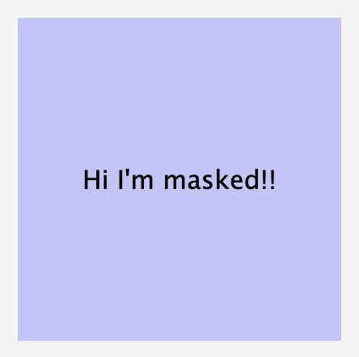
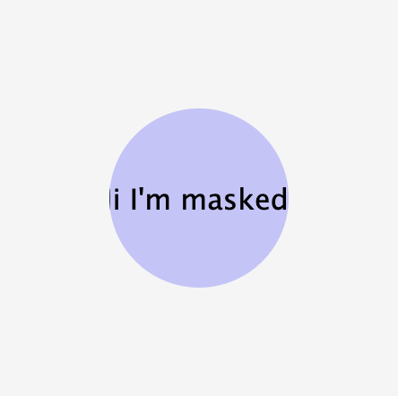
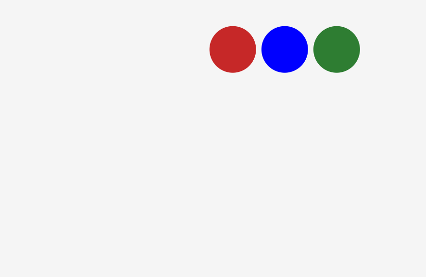
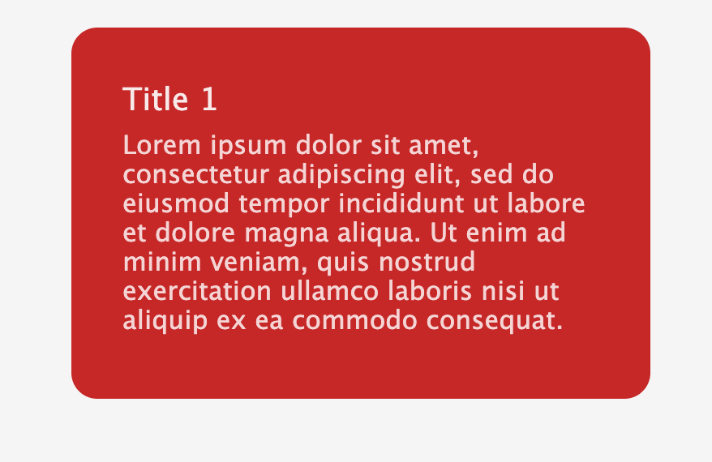

Web traffic continues to grow and more websites are starting to pop up and compete to grab user attention. As people tend to turn to the cutting edge, UI/UX designers continue to pursue more dynamic and attention grabbing layouts.
In the earlier days of web development a lot of curvy and dynamic interfaces would be implemented by a great hack of CSS tricks and background images. Or customly implemented using SVG and paths.
However CSS continues to develop and more developer-friendly ways of constructing a layout and curved surfaces continue to appear.
As front end engineers continue their learning, a handy tool to know for implemented UI is clip-path. Like masking, clip-path fulfills a similar role and allows developers to portion their containers and only show a unique perspective of the work behind them.
A quick way to create a circular mask is as follows.
<style>
#masked {
display: flex;
justify-content: center;
align-items: center;
width: 200px;
height: 200px;
background: rgba(0, 0, 255, 0.2);
clip-path: circle(25%);
}
</style>
<body>
<div id="masked">Hi I'm masked!!</div>
</body>
Without, 
With, 
The fun things with masks is that we can also combine them with transitions to create some fill in effects. Using transition with clip-path creates some very nice designs. Here is an example of a multiple part tab design with mask transitions.
Closed, 
Opened, 
There is a lot of neat options with clip-path along with SVG options. But you should check them out at Mozilla's web docs.
Thanks for reading and if you have any questions for me, feel free to shoot me an email below.